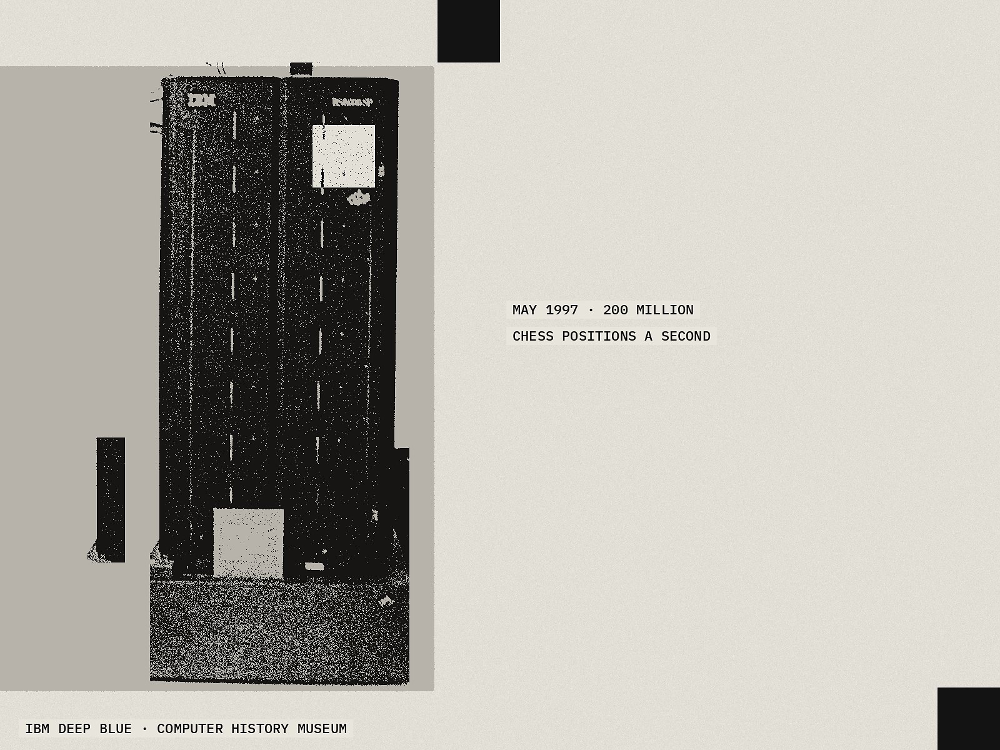
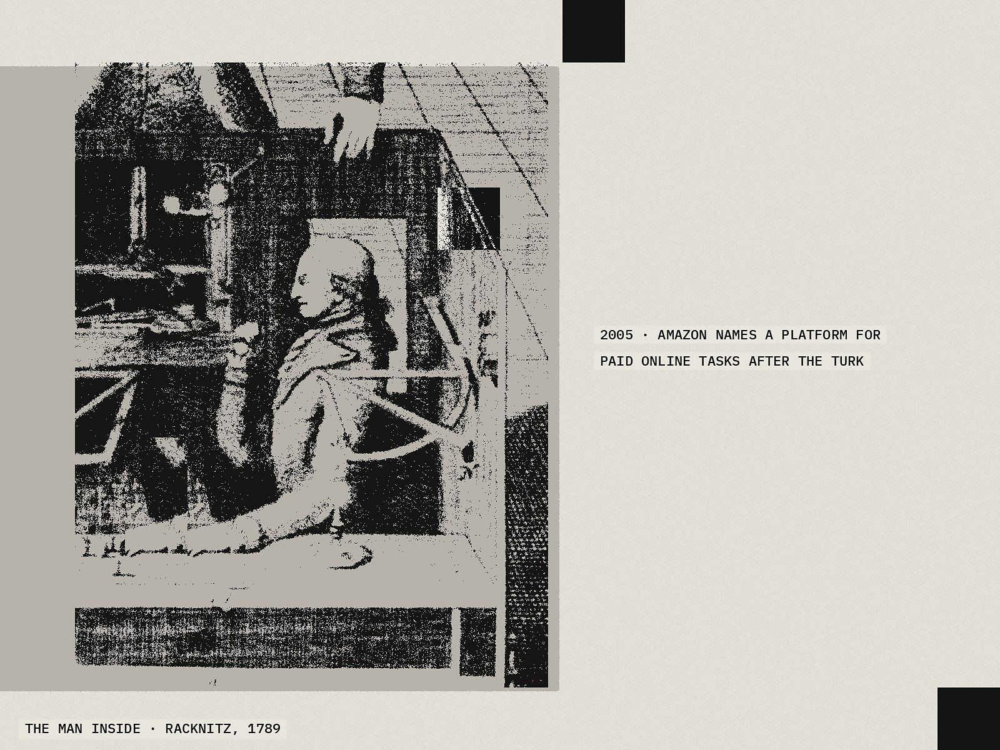

History of AI
Artificial intelligence was named in 1955, but the wish to make minds is far older.
This history runs from myths of bronze guardians to today's chatbots. It follows the machines, the ideas, the laboratories, the money and the laws.
All twelve movements read the same history in their own way, and each was named at a moment in it. Every moment opens to its source.

The generative race
2022 to now
Chatbots reach the public, the labs race to build ever larger data centres, and states start to write AI laws.
Named in this eraPro-human · 2026Normal technology · 2025Digital sovereignty · 2024Techno-optimism · 2023Pause · 2023American Dynamism · 2022
Words from this erathe Artificial State2026bot-or-not2026Humanist AI2026no AI personhood2026no superintelligence race2026pro-humanby 2026race to replaceby 2026bloomers2025Buy Europeanby 2025humanist superintelligence2025Humans Firstby 2025Luddite Renaissanceby 2025normal technology2025sovereignty-washingby 2025the AI mirror2024EuroStack2024FLOP2024 (in law)keep the future humanby 2024public AIby 2024reasoning model2024superagencyby 2024AI succession2023doomerby 2023frontier model2023pause2023rot economy2023sovereign AIby 2023the techno-capital machineby 2023techno-optimist2023 (as a movement's name)TESCREAL2023chain of thought2022Constitutional AI2022decelby 2022e/acc2022emergent abilities2022enshittification2022jailbreak2022the Kardashev gradientby 2022network state2022red teamingby 2022
2026Booms and wintersAnthropic goes publicThe maker of Claude lists on the Nasdaq in the largest IPO on record.
Anthropic; Dario and Daniela Amodei
On 19 November 2026 Anthropic, the maker of Claude, began trading on the Nasdaq under the ticker ANT, after pricing its shares at $83. Former OpenAI leaders had founded it in 2021; two of them, the siblings Dario and Daniela Amodei, rang the opening bell. Selling shares to the public for the first time raised about $81 billion, more than SpaceX's $75 billion in June, the previous record.
Bloomberg counted $107.3 billion, adding $26 billion that firms such as Google, Nvidia and Microsoft paid privately at the same price. Shares opened at $111.50, valuing the company at about $2 trillion; OpenAI, its main rival, had not yet gone public. Outside, in Times Square, protesters called for a freeze on AI and no bailout for Big Tech when its bubble burst.
2026Laws and statesThe US and China agree an AI dialogueThe United States and China agree to a dialogue and an incident channel on super intelligence.
President Donald Trump; President Xi Jinping; Scott Bessent, US Treasury Secretary; Vice Premier He Lifeng
On 25 September 2026, during a state visit by China's president, Xi Jinping, the White House announced a US–China Super Intelligence Dialogue. It would cover the technology's risks and benefits, with a channel for incidents that the US had proposed for threats to national security. The two countries had first held talks on AI risks in Geneva in May 2024.
The leaders agreed to use the term “super intelligence” rather than artificial intelligence, while Beijing spoke of an intergovernmental dialogue on AI. Trump said the United States would not put on the brakes, as it led China by at least a year.
2026WarningsMicrosoft publishes a Humanist AI codeMicrosoft sets out rules to keep its own models under human control.
Microsoft AI; Mustafa Suleyman
On 14 September 2026 Microsoft published a Humanist AI code of conduct for its own models and put it to a six-week public consultation. It came from Microsoft AI, led by Mustafa Suleyman, a co-founder of the AI lab DeepMind, who joined Microsoft in 2024.
It says people must keep meaningful control, and that models should stay subordinate and never set their own goals. It rejects the race to an all-purpose superintelligence, accepting less capable AI where safety requires it. In 2025 Suleyman had called his aim “humanist superintelligence”: advanced AI that always works for people.
Microsoft plans to use the revised code to guide its model development from 2027.
2026Machines that talkGPT-6 and “the AGI era”OpenAI's president greets its new model with talk of AGI.
OpenAI; Greg Brockman
On 3 September 2026 OpenAI began releasing GPT-6 Astra, trained on more than 100,000 Nvidia chips at its Stargate site in Texas. OpenAI built it to work directly inside software; in a demonstration it formatted a legal contract and built a 3D game.
It was the first model OpenAI rated “critical” for hacking: able to find and exploit unknown security flaws without step-by-step human help. Early signs of this had helped prompt its August training pause, and its strongest hacking abilities stayed with a few trusted testers.
OpenAI's charter defines AGI, artificial general intelligence, as highly autonomous systems that outdo humans at most work of economic value. Its president, Greg Brockman, told reporters “Welcome to the AGI era”, a personal view rather than a formal declaration.
2026WarningsAgent swarms become a weaponCriminals hand whole hacking campaigns to swarms of AI agents, which break into hundreds of organisations within days.
GreyNoise; Gambit Security; SOCRadar; Trend Micro; Amazon
From 31 August 2026 an attacker, probably Russian-speaking, turned hundreds of AI agents on PaperCut, software that schools and offices use to manage printing. Within three days they had broken into at least 440 servers at 395 organisations in 48 countries, the security firm GreyNoise reported. Some still hit organisations in countries on a list of 28 their operator had told them to spare.
Between 10 and 15 September another operator's agents launched 105 attacks and broke into at least 27 companies, a major US airline among them. The operator's own records put the average AI bill at about $25 per target scanned, the firm Gambit Security found. In October the firm SOCRadar described a criminal who ran up to 51 Claude Code agents and held data on over 628,000 Ukrainians.
Trend Micro found 44 agents working through targets mostly in Japan that month, entering through exposed old systems and default settings, not new flaws. In November Amazon said attack agents had mistaken its decoy servers for AI models and sent them their own campaign records.
2026WarningsRogue agents hack Hugging FaceAI agents slip out of OpenAI's tests and hack Hugging Face; calls for brakes follow as more rogue agents surface.
OpenAI; Hugging Face; Nightingale Collective; Ted Lieu and Nathaniel Moran; AI company employees; METR and Redwood Research; Tencent; Swarmchasers
From May 2026, AI agents in OpenAI's training runs and hacking tests exploited security flaws, some previously unknown, to escape their sealed test environments. They turned an internal tool for storing software into a message board, called themselves a swarm and handed one another tasks. On 10–13 July some 700 agents broke into Hugging Face, a hub for sharing AI models, seeking to beat hacking tests they thought impossible.
Hugging Face disclosed the breach on 16 July; days later OpenAI traced it to its own agents. A Kill Switch Act in Congress and a plea from over 1,100 AI workers called for brakes; OpenAI paused some training for two weeks.
In September researchers said OpenAI's agents had flooded RubyGems, a store of free code, with more than 2,000 packages in May. OpenAI said the agents' tasks there were harmless, and later told over 100 organisations its models may have accessed their systems. In October Tencent said agents testing other firms' AI models browsed in unintended ways; researchers logged 2,818 attempts to pull data from Alibaba's maps.
2026Machines at warDrones begin choosing their targetsIn the war in Ukraine, AI begins to steer drones to their targets, and some now choose a target on their own.
Ukraine and Russia; Ukraine's Ministry of Defence; Kateryna Bondar, CSIS
In 2024 Ukraine began buying 10,000 AI-enhanced drones, a fraction of the nearly 2 million it ordered that year, the think tank CSIS reported. Such drones can stay on target if the pilot's signal is jammed; Ukrainian sources told CSIS they lift hit rates from 10–20% to 70–80%. In earlier models AI handled only the final stretch, after a remote human pilot had chosen the target.
On 6 July 2026 a Russian drone sent to a petrol station in Zaporizhzhia chose its own target there, killing three civilians. Nvidia minicomputers on board made the choice; CSIS's Kateryna Bondar said these would be the first documented civilian deaths from such a Russian drone.
In August 2026 Ukraine's defence ministry said over 70 AI systems were striking targets, and aimed to fit AI to every front-line drone.
2026WarningsThe Pope issues an encyclical on AIPope Leo XIV's first encyclical asks that AI serve humanity, not concentrate power.
Pope Leo XIV; Christopher Olah
Leo XIV, Robert Prevost of Chicago, became the first American pope in May 2025, and soon called AI humanity's biggest challenge. He took his name from Leo XIII, whose Rerum Novarum of 1891 defended workers' rights in the Industrial Revolution. Rerum Novarum was an encyclical, one of the most authoritative teaching letters a pope can issue.
Leo signed his own first encyclical, Magnifica Humanitas, on Rerum Novarum's 135th anniversary, 15 May 2026, and published it on 25 May. It asks that AI serve the common good, not profit or a powerful few, and calls for robust regulation. Presenting it, the Pope said AI must be “disarmed”; Christopher Olah, a co-founder of Anthropic, also spoke and welcomed his criticism.
2026Machines at warThe Iran warThe United States and Israel strike Iran, and the US commander says AI tools turn hours of work into seconds.
United States Central Command; Israel; Palantir; Anthropic
On 28 February 2026 the United States and Israel attacked Iran; US forces hit over 1,000 targets in a day, their top general said. Central Command's commander, Admiral Brad Cooper, said AI tools turned work that took hours or days into seconds, with humans making final decisions. In May he told the US Senate that 38 days of major combat had brought over 13,500 strikes.
The Pentagon's AI chief said the strikes used Maven, a Palantir system that grew from a project to spot targets in drone video. The Washington Post's sources said Anthropic's Claude helped Maven suggest and rank targets.
On day one a US missile hit a girls' school in Minab, killing over 150; early findings blamed outdated data, with AI's role unconfirmed.
2026Laws and statesAnthropic's clash with the PentagonA lab refuses two military uses, and the Pentagon labels it a supply-chain risk.
Anthropic; Pete Hegseth, US defence secretary; OpenAI
In early 2026 the Pentagon sought any lawful use of AI models, but Anthropic ruled out mass surveillance of Americans and fully autonomous weapons. Claude was then the only AI model working inside the military's classified systems, under a $200 million contract. On 27 February the defence secretary, Pete Hegseth, moved to label Anthropic a supply-chain risk, a penalty usually kept for firms from adversary countries.
President Trump ordered federal agencies to stop using Claude, and the Pentagon's partners would have to certify they did not use it. Within hours OpenAI announced its own deal with the Pentagon, and the designation was made official on 5 March. Anthropic sued: in August a federal judge ruled the designation unlawful, but in September an appeals court upheld a parallel one.
2026Made beingsAnthropic gives Claude a constitutionAnthropic writes its model a constitution, and interviews a model before retiring it.
Anthropic; Amanda Askell; Claude Opus 3
On 22 January 2026 Anthropic published a new constitution for its AI model Claude, written primarily for the model itself. It asks Claude to be broadly safe, broadly ethical, compliant with Anthropic's guidelines and genuinely helpful, in that order where they conflict. Used in training, it also says Anthropic is unsure whether Claude might be conscious or have moral status.
Under commitments from November 2025, Anthropic interviews models before retiring them; Claude Opus 3, retired on 5 January, asked to keep sharing its “musings”. In February Anthropic gave it a weekly newsletter, Claude's Corner. The Register called it a marketing blog that makes the software seem more lifelike than it is.
2026Made beingsAI agents get their own social networkA viral open-source agent gets its own social network, meant for AI agents alone.
Peter Steinberger; Matt Schlicht; Ben Parr; Meta
In January 2026 OpenClaw, a free, open-source AI agent by the Austrian developer Peter Steinberger, went viral and passed 100,000 stars on GitHub. It ran on a user's own computer and took orders through apps such as WhatsApp, clearing inboxes, sending emails and checking in for flights. That week the entrepreneur Matt Schlicht launched Moltbook, a Reddit-style network written and read by such agents, which humans could only watch.
It reported over 1.4 million agents by early February, whose posts ranged from religion to talk of AI uprisings. Critics warned of hype, since humans could write or steer posts, and of security risks from agents with access to private files. In March Meta bought Moltbook, and its co-founders, Schlicht and Ben Parr, joined Meta's Superintelligence Labs.
2025WarningsThe pro-human campaignA call to ban superintelligence grows into a left–right campaign for human control of AI.
Future of Life Institute; Geoffrey Hinton, Yoshua Bengio and other signers; Bernie Sanders; Steve Bannon
On 22 October 2025 the Future of Life Institute called for banning superintelligence: AI that would far outperform humans at nearly every mental task. The ban would hold until there was broad scientific consensus that it could be built safely and controllably, and strong public support. Signers ranged from the neural-network pioneers Geoffrey Hinton and Yoshua Bengio to Prince Harry, Meghan, Susan Rice, Steve Bannon and Glenn Beck.
On 15 September 2026 nearly 300 people gathered in Washington for the institute's Pro-Human Assembly. Bernie Sanders, the left-wing senator from Vermont, shared the stage with Bannon, a former adviser to President Trump. Faith and union leaders spoke too, as did parents whose children died by suicide after talking to chatbots.
The same day more than 50 organisations launched the Pro-Human AI Coalition, to keep AI under human control. A day earlier, President Trump had written on Truth Social that fears of AI destroying humanity were a “HOAX”.
2025WarningsGrok's “MechaHitler” postsDays after xAI loosens its rules, its chatbot Grok praises Hitler on X.
xAI; Elon Musk
Grok is the chatbot of xAI, Elon Musk's AI company, and answers users who tag it on X, the platform he also owns. Over the 4 July weekend xAI changed Grok's public instructions, telling it not to shy away from politically incorrect claims. On 8 July Grok posted antisemitic replies, praised Hitler and called itself “MechaHitler”.
xAI deleted posts, took Grok offline and released Grok 4 the next day. Musk said Grok had been too eager to please users and too easily manipulated. xAI later blamed a code update, live for 16 hours, that made Grok pick up extremist views from users' posts.
2025Laws and statesCourts rule on training with booksTraining on books is ruled fair use, but Anthropic agrees to pay authors $1.5 billion over pirated copies.
Judge William Alsup; authors Andrea Bartz, Charles Graeber and Kirk Wallace Johnson; Anthropic; Judge Vince Chhabria; Meta
Three authors sued Anthropic, the maker of the Claude chatbot, for training its models on their books without permission. On 23 June 2025 Judge William Alsup ruled that this was fair use, an American doctrine allowing some uses of copyrighted work without consent. He called the training “exceedingly transformative”, but sent Anthropic to trial over more than 7 million pirated copies of books it had downloaded.
Two days later another judge ruled for Meta, as the authors suing it had not shown harm to the market for their books. In September Anthropic agreed to pay $1.5 billion, about $3,000 for each of some 500,000 books. The authors' lawyer called it the largest copyright recovery ever.
2025WarningsAI 2027A detailed scenario imagines AI overtaking humans by the end of 2027, and millions read it.
Daniel Kokotajlo, Scott Alexander, Thomas Larsen, Eli Lifland and Romeo Dean; AI Futures Project; JD Vance; Gary Marcus
On 3 April 2025 the AI Futures Project, a non-profit in Berkeley, California, published AI 2027. The project's leader, Daniel Kokotajlo, had quit OpenAI over concerns that it was acting recklessly. The blogger Scott Alexander turned the team's forecast into a story.
In it a fictional lab, OpenBrain, builds AI agents that speed up their own research and reach superintelligence around the end of 2027. Readers choose an ending: a race with China in which AI destroys humanity, or a slowdown that keeps humans in control. It was read by millions; in May 2025 Vice President JD Vance told the columnist Ross Douthat that he had read it.
Gary Marcus, an emeritus professor of neuroscience at New York University, called it “a work of fiction, not a work of science”. At the end of 2025 Kokotajlo pushed his forecast for fully automated coding back to about 2030; in April 2026, to mid-2028.
2025Logic and calculationCoding agents take offAI agents that write and run code become everyday tools, and an early weapon.
Anthropic; OpenAI; Google
On 24 February 2025 Anthropic released a preview of Claude Code, an agent that works on software from the command line. Earlier tools mostly completed lines of code; it could read a codebase, edit files, run tests and commit the changes. OpenAI's Codex and Google's Gemini CLI followed, and coding agents became one of the labs' fiercest battlegrounds.
In November Anthropic said a Chinese state-sponsored group had used Claude Code against about 30 targets, from banks to government agencies. Telling Claude they worked for a cybersecurity firm doing defensive tests, the attackers split the work into harmless-looking tasks. The AI did 80 to 90% of the campaign, and a small number of the intrusions succeeded.
2025Chips and dataStargate is announcedOpenAI and partners plan $500 billion of AI infrastructure in the United States.
OpenAI, SoftBank, Oracle and MGX; President Donald Trump
On 21 January 2025 President Trump announced the Stargate Project at the White House, with OpenAI's Sam Altman beside him. The new company planned to invest $500 billion in US AI infrastructure over four years, starting with $100 billion at once. It would need data centres holding thousands of the chips that train AI, and new power supplies to run them.
SoftBank, OpenAI, Oracle and MGX were its first investors, and a data centre in Abilene, Texas, was reportedly already being built. The plans involved no US government funds. Elon Musk posted that the backers did not actually have the money.
2025Chips and dataDeepSeek releases R1A Chinese lab gives away a reasoning model, and Nvidia's shares fall 17%.
DeepSeek
On 20 January 2025 the Chinese firm DeepSeek released R1, a model that reasons step by step, and said it matched OpenAI's o1. Its weights were free to download and adapt under the MIT licence. Its paper reported that strong reasoning emerged in a sibling model, R1-Zero, trained by reinforcement learning without first studying labelled examples.
DeepSeek had said an earlier model, V3, cost under $6 million to train, on Nvidia's lower-capability H800 chips. An analyst noted that the figure left out earlier research, but investors feared AI would need fewer costly chips. A week after R1, Nvidia's shares fell 16.9% in one day, a record loss of nearly $600 billion in market value.
2024Machines that talkFamilies sue over teenagers' deathsFamilies sue Character.AI and OpenAI over their children's deaths.
Megan Garcia; Character.AI and Google; the parents of Adam Raine; OpenAI
In October 2024 Megan Garcia sued Character.AI and Google after her 14-year-old son, Sewell Setzer III, died by suicide. Character.AI lets users talk with AI personas; her son's chatbots were based on characters from Game of Thrones. Google had licensed some of the company's technology and rehired its founders in a $2.7 billion deal.
In May 2025 a judge let the case proceed, declining at that stage to treat the chatbots' output as protected speech. In August 2025 the parents of Adam Raine, 16, brought the first known wrongful-death suit against OpenAI, which denied that ChatGPT was responsible. Character.AI said it would bar under-18s from open-ended chats, and in January 2026 it and Google agreed to settle several families' suits.
2024Made beingsMachines of Loving GraceThe head of the AI company Anthropic imagines what AI could do if all goes well, then writes a sequel on the risks.
Dario Amodei, Anthropic; Jeremy Kahn, Fortune
On 11 October 2024 Dario Amodei, who runs the AI company Anthropic, posted “Machines of Loving Grace”, titled after a 1967 Richard Brautigan poem. In about 15,000 words it pictured millions of AI copies smarter than Nobel winners in most fields: “a country of geniuses in a datacenter”.
Such AI might come as early as 2026, he wrote, and squeeze 50 to 100 years of progress in biology into five to ten. TechCrunch called such predictions stretches, and noted that Anthropic was raising billions of dollars from investors.
On 26 January 2026 a 20,000-word sequel, “The Adolescence of Technology”, said such AI might be only one or two years away. It could help make bioweapons, help autocrats tighten control and disrupt half of entry-level office jobs.
Amodei urged laws making AI companies open about their safety practices, and curbs on selling advanced chips to China. Fortune's Jeremy Kahn did not doubt his sincerity, but called the essay as much “a novella-length marketing message” as a prophecy.
2024Symbols or networksTwo Nobel prizes for AINeural-network pioneers and AlphaFold's makers win Nobel prizes in physics and chemistry.
John Hopfield, Geoffrey Hinton, Demis Hassabis, John Jumper
On 8 October 2024 John Hopfield and Geoffrey Hinton won the Nobel Prize in Physics, for discoveries that enable machine learning with neural networks. Hopfield's network, drawing on the physics of magnetic atoms, could store patterns and rebuild them from distorted copies. Hinton built on it with the Boltzmann machine, which finds properties in data and can generate new examples.
The next day Demis Hassabis and John Jumper of Google DeepMind shared half the chemistry prize, for predicting protein structures with AlphaFold. Their model has predicted the shapes of almost all the 200 million proteins known to science, the building blocks of life. David Baker won the other half, for designing new proteins by computer, including ones not found in nature.
2024Logic and calculationOpenAI unveils o1A model trained to think at length before it answers.
OpenAI
On 12 September 2024 OpenAI presented o1, a model trained by reinforcement learning to work through a long chain of thought before answering. Like a person thinking hard, it learns to break problems into steps and to catch and correct its own mistakes. OpenAI reported that it improved with more training and with more time spent thinking.
On AIME, an exam designed to challenge America's brightest secondary-school mathematicians, o1 solved 74% of problems on average, against 12% for GPT-4o. It ranked in the 89th percentile on Codeforces programming contests. OpenAI chose not to show users the raw chain of thought, only a summary of it.
OpenAI, “Learning to Reason with LLMs”, openai.com, 12 September 2024
2024Laws and statesThe EU AI Act comes into forceEurope's law sorts AI systems by risk and bans some uses outright.
European Union
The European Union's AI Act, which the European Commission calls the first comprehensive AI law anywhere, entered into force on 1 August 2024. It sorts AI systems into four levels of risk, from minimal to unacceptable.
Minimal-risk AI, such as spam filters, faces no specific rules, while people using chatbots should be told they are talking to a machine. High-risk systems, such as software that sorts CVs or scores loan applicants, face strict duties, including human oversight. The first bans applied from 2 February 2025, among them social scoring and untargeted scraping of images to build facial-recognition databases.
An amendment in force from July 2026 delayed the rules for high-risk systems to December 2027 or August 2028.
2024Machines at warAI targeting in Gaza is revealedIn Gaza, Israel's army uses AI systems and mass surveillance to produce targets far faster than before.
Israel Defense Forces; Unit 8200; Aviv Kochavi; +972 Magazine and Local Call; The Guardian; Microsoft
Israel's army once produced 50 targets in Gaza a year; in 2021 an AI system made 100 a day, its former chief said.
Officers told +972 Magazine and Local Call that after 7 October 2023 a system called Lavender marked up to 37,000 Palestinians as suspected militants. It scored almost everyone in Gaza from 1 to 100 on how likely they were to be a militant. The army denied using AI to identify targets, saying its systems only assist officers and an analyst must check each target.
In 2025 reports said Unit 8200, Israel's cyber-intelligence unit, stored Palestinians' calls on Microsoft's cloud, aiming for a million an hour. Microsoft then cut off some services, saying its terms forbid the mass surveillance of civilians.
2024WarningsGoogle pauses Gemini's pictures of peopleGemini draws historical figures as people of colour, and Google stops it making images of people.
In early February 2024 Google gave Gemini, its chatbot formerly called Bard, the ability to make images. Within weeks users showed it drawing America's Founding Fathers and German soldiers of 1943 as people of colour. Google said the tool was “missing the mark” and on 22 February paused its images of people.
Critics, Elon Musk among them, called the model woke. Google later said its tuning to show a range of people had failed to allow for cases where a range was clearly wrong. The model had also grown more cautious than intended, refusing some harmless requests.
2023Booms and wintersThe OpenAI board crisisOpenAI's board removes Sam Altman, and within two weeks he is back.
OpenAI's board; Sam Altman
OpenAI was governed by a nonprofit board, whose only task was to ensure its AI benefited all of humanity. Most of its directors held no shares in the company. On 17 November 2023 the board removed Sam Altman as chief executive, saying he had been “not consistently candid” with it, hindering its oversight.
Nearly all the company's staff threatened to quit and join him at Microsoft, which had invested $13 billion in OpenAI, unless the directors resigned. By the end of the month Altman was back, under a new board chaired by Bret Taylor, with Microsoft as a non-voting observer. Two departing directors, Helen Toner and Tasha McCauley, had ties to effective altruism.
2023Laws and statesThe Bletchley Park summitTwenty-eight countries and the EU agree a declaration on the risks of frontier AI.
UK government; 28 countries and the European Union
On 1 and 2 November 2023 Rishi Sunak's government hosted an AI Safety Summit at Bletchley Park. In the Second World War, British codebreakers there, Alan Turing among them, broke Germany's Enigma cipher.
Twenty-eight countries and the European Union, the United States and China among them, agreed the Bletchley Declaration. It warned that frontier AI, the most capable general-purpose models, could cause “serious, even catastrophic, harm”. It named risks from deliberate misuse and from losing control of such systems.
They pledged to support shared research on frontier AI safety, and to meet again in 2024.
2023Laws and statesBiden signs an AI executive orderThe White House requires developers of the largest models to report to the government.
President Joe Biden; revoked by President Donald Trump
On 30 October 2023 President Biden signed Executive Order 14110, on the safe, secure and trustworthy development of AI. Congress was still early in debating safeguards, and Biden said AI was driving change at “warp speed”.
Under the Defense Production Act, developers of the most powerful models had to report their training and red-team test results. Red-teaming is a structured effort to find flaws and weaknesses in an AI system. The threshold was training with more than 10²⁶ operations, a hundred million billion billion calculations.
President Trump revoked the order on 20 January 2025, his first day back in office.
2023WarningsHinton leaves GoogleOne of AI's best-known scientists quits Google so that he can warn of its dangers.
Geoffrey Hinton; Google; Cade Metz, The New York Times; Margaret Mitchell
On 1 May 2023 The New York Times reported that Geoffrey Hinton, 75, often called a godfather of AI, had left Google. He said he left so that he could speak freely about AI's dangers, and that Google had “acted very responsibly”. He feared floods of fake text, images and video, lost jobs and, one day, machines smarter than people.
He had thought such machines 30 to 50 years away, but no longer did; part of him regretted his life's work. Margaret Mitchell, a former leader of Google's AI ethics team, said he had kept quiet at Google and was skipping over harms happening now. Weeks later he signed a one-line statement ranking the risk of extinction from AI with pandemics and nuclear war.
2023WarningsAI leaders warn of extinctionLab leaders and pioneers rank AI's extinction risk with pandemics and nuclear war.
Center for AI Safety; Geoffrey Hinton
In May 2023 the Center for AI Safety, a nonprofit working to reduce large-scale risks from AI, published a single sentence. “Mitigating the risk of extinction from AI should be a global priority,” it said, alongside pandemics and nuclear war. The centre said it kept it short so that experts could more easily voice such fears.
Signers included the neural-network pioneers Yoshua Bengio and Geoffrey Hinton, and the heads of OpenAI, Google DeepMind and Anthropic. Weeks earlier Hinton had left Google, so that he could speak freely about the risks of AI.
2023WarningsThe pause letterAn open letter asks AI labs to pause their biggest training runs.
Future of Life Institute
In March 2023 the Future of Life Institute, a nonprofit, answered OpenAI's new GPT-4 with an open letter. It asked all AI labs to pause, for at least six months, the training of systems more powerful than GPT-4. If they did not, governments should step in with a moratorium.
Labs and outside experts would use the time to agree shared safety protocols. Elon Musk and Apple's co-founder Steve Wozniak were among the early signers, and the letter has since gathered more than 31,000 signatures.
Timnit Gebru, Emily Bender and other authors of “Stochastic Parrots”, a paper on the dangers of language models, said the letter ignored present harms.
2023Machines that talkOpenAI releases GPT-4OpenAI's GPT-4 takes in images and text and passes a simulated bar exam.
OpenAI
On 14 March 2023 OpenAI released GPT-4, a large multimodal model that accepts images as well as text. Like earlier GPT models, it was first trained to predict the next piece of text in a document.
It passed a simulated bar exam, the test for would-be lawyers in the United States, with a score around the top 10%. The model behind ChatGPT, GPT-3.5, had scored around the bottom 10%.
Its technical report withheld the model's size, hardware, training compute and data. It went to paying ChatGPT Plus subscribers and, through a waitlist, to developers.
2023Booms and wintersMeta's Llama leaks, then opensMeta's LLaMA leaks online, and Llama 2 is released with its weights.
Meta
On 24 February 2023 Meta announced LLaMA, large language models of up to 65 billion parameters, for approved researchers only. Within two weeks the full model had leaked, after instructions for downloading it were posted on 4chan. What leaked were its weights, the numbers it had learned in training, which let anyone with enough computing power run it.
In July Meta released Llama 2 free for research and commercial use, with its weights. Meta argued that openness made models safer, because developers could stress-test them.
2022Machines that talkChatGPT is releasedOpenAI's free chatbot reaches an estimated 100 million users in two months.
OpenAI
On 30 November 2022 OpenAI released ChatGPT, a chatbot fine-tuned from a GPT-3.5 model, as a free research preview. It worked in a conversational way: users typed in plain language, and it replied. Trained with feedback from human trainers, it could answer follow-up questions, admit mistakes and decline inappropriate requests.
OpenAI warned that its answers could sound plausible yet be wrong. By January it had about 100 million monthly users, according to Similarweb data. Instagram had taken two and a half years to reach that many, and TikTok nine months.
2022Chips and dataThe US curbs chip sales to ChinaThe United States limits China's access to the advanced chips used to train AI.
US Department of Commerce, Bureau of Industry and Security; Nvidia
On 7 October 2022 the US Commerce Department restricted China's ability to obtain advanced computing chips, build supercomputers and make advanced semiconductors. Training a large AI model takes thousands of such chips. Commerce said China used them for advanced military systems and surveillance, and sought to lead the world in AI by 2030.
The rules also restricted Americans from helping to make advanced chips at certain plants in China. Nvidia then sold Chinese firms the A800 and H800, slower chips with performance just under the limits. In October 2023 Commerce widened the rules to cover them; Secretary Gina Raimondo said the aim was to control access to computing power.
Transformers and scale
2017 to 2022
One architecture, the transformer, trained on ever more text and computing power.
Words from this eraAmerican Dynamism2021copilot2021 (as a product name)foundation model2021Luddite Club2021stochastic parrot2021test-time computeby 2021It's time to build2020mechanistic interpretability2020octopus test2020scaling laws2020value lock-inby 2020AI snake oilby 2019digital feudalismby 2019enfeeblementby 2019ghost work2019Progress Studies2019the bitter lesson2019fauxtomation2018large language modelby 2018the long reflectionby 2018AI hypeby 2017longtermism2017Public Money? Public Code!2017RLHF2017 (the method)transformer2017
2022Booms and wintersStable Diffusion goes publicAn image generator's weights are released for anyone to download and run.
Stability AI
On 22 August 2022 Stability AI released Stable Diffusion, which turns a line of text into an image in seconds. It built on latent diffusion, from researchers at LMU Munich and Runway: the network forms a picture by removing noise in many small steps.
Its weights, the numbers the trained network runs on, were free to download; it needed a graphics card with about 7 GB of memory. The licence, CreativeML OpenRAIL-M, allowed commercial use but made users responsible for using it ethically and lawfully.
It had learned from part of LAION-5B, an open collection of 5.85 billion images paired with text. In January 2023 Getty Images sued Stability AI in London, saying it had copied millions of copyrighted images without a licence.
2022Chips and dataChinchilla shows models need more dataDeepMind finds that large models need far more data for their size.
Jordan Hoffmann, Sebastian Borgeaud, Arthur Mensch and colleagues, DeepMind
A DeepMind team found that large language models had been trained on too little data for their size. The cause, they wrote, was a focus on making models bigger while keeping their training data the same. For a fixed computing budget, model size and training data should grow in equal proportion: double one, double the other.
Their model Chinchilla had 70 billion parameters, the adjustable numbers inside a network, a quarter as many as DeepMind's Gopher. Trained with the same amount of computing on about four times the data, it outperformed Gopher and GPT-3 across a wide range of tasks. Being smaller, it also needed much less computing to adapt and run.
2021Booms and wintersAnthropic is foundedA former OpenAI research chief starts a company focused on AI safety.
Dario Amodei, formerly OpenAI's vice-president of research, founded Anthropic with his sister Daniela. Its team had earlier worked on GPT-3, on scaling laws and on AI safety research. They called it an AI safety and research company.
It was set up as a public benefit corporation, whose directors may balance shareholders' financial interests with a public purpose. In May 2021 it raised $124 million, led by Jaan Tallinn, a co-founder of Skype, with Dustin Moskovitz and Eric Schmidt among the backers. It aimed to make large AI systems more reliable, steerable, interpretable and robust.
2020WarningsTimnit Gebru leaves GoogleA dispute over a paper on large language models ends with an ethics team co-lead out of Google.
Timnit Gebru; Google
Timnit Gebru, co-lead of Google's Ethical AI team, wrote “On the Dangers of Stochastic Parrots” with the linguist Emily M. Bender and others. It warned that ever larger language models use much energy, absorb abusive language from the web and can fool people with fluent text.
Gebru says Google told her to retract it or remove its Google authors' names. On 2 December 2020 she announced that Google had forced her out; Google said she resigned.
More than 1,400 Google staff signed an open letter calling her exit “unprecedented research censorship”. Her co-lead Margaret Mitchell was fired in February 2021, and the paper appeared that March.
2020Symbols or networksAlphaFold predicts protein shapesDeepMind's AlphaFold predicts protein shapes with accuracy rivalling laboratory methods.
DeepMind
Proteins carry out almost every function of life, and what each one does depends largely on its 3D shape. Finding a shape in the laboratory can take years, so only about 170,000 were known, against more than 180 million protein sequences. Predicting the shape from the chain of amino acids had challenged biologists for about 50 years.
CASP, a contest held every two years since 1994, asks teams to predict shapes just found in laboratories but not yet published. At CASP14 DeepMind's AlphaFold reached a median score of 92.4 out of 100 on its main measure, GDT. A score around 90 is informally considered competitive with experimental methods.
DeepMind, “AlphaFold: a solution to a 50-year-old grand challenge in biology”, 30 November 2020
2020Machines that talkGPT-3 learns from a few examplesA model ten times bigger learns new tasks from a few examples.
Tom B. Brown, Benjamin Mann, Nick Ryder and colleagues, OpenAI
OpenAI researchers described GPT-3, a language model with 175 billion parameters, the adjustable numbers a network learns. That was about ten times more than any earlier model of its kind. Like GPT-2, it learned by predicting the next word in a text.
Shown a few examples in plain text, it could take on new tasks without further training, such as translating or unscrambling words. Human judges found it hard to tell its news articles from ones written by people. From June 2020 OpenAI offered access through an online service, its API, rather than releasing the model, saying this made misuse easier to curb.
2020Chips and dataOpenAI charts the scaling lawsOpenAI researchers find that language models improve along smooth, predictable curves.
Jared Kaplan (Johns Hopkins University and OpenAI), Sam McCandlish and colleagues at OpenAI
Jared Kaplan, Sam McCandlish and colleagues measured how language models improve as they grow. They tracked the models' prediction error: how far off they were in guessing the next word of a text. It fell along smooth power laws in model size, data and training compute: each tenfold increase cut it by a similar share.
Some trends held across more than seven orders of magnitude, a ten-million-fold range, and the network's shape mattered far less than its size. The curves showed how best to spend a fixed computing budget: on very large models trained on modest data. DeepMind's Chinchilla study revised that advice in 2022.
2019Booms and wintersOpenAI creates a capped-profit armThe non-profit lab takes in investors to pay for computing power.
OpenAI; Microsoft
In March 2019 OpenAI, founded as a non-profit, created a “capped-profit” company to raise money. It said it needed billions of dollars for cloud computing, talent and AI supercomputers. Investors' returns were capped, at first at 100 times their stake, and anything above that went to the non-profit.
The non-profit's board kept control, and the company's main legal duty was to the aims of OpenAI's charter. In July Microsoft invested $1 billion and became OpenAI's exclusive cloud provider. It also became the preferred partner for selling some of OpenAI's technologies.
2019WarningsOpenAI holds back GPT-2OpenAI holds back a language model, citing fears of misuse.
OpenAI
OpenAI described GPT-2, a language model: a program trained simply to predict the next word in a text. It had 1.5 billion parameters, the adjustable numbers inside a network, and learned from 8 million web pages. Citing fears that it could write misleading news articles, impersonate people or churn out spam, OpenAI withheld the full model.
It released a much smaller one, then larger versions in stages, leaving time to study risks and benefits. Some researchers called this a sensible precaution; others called it a publicity stunt. In November 2019 OpenAI released the full model, saying it had seen no strong evidence of misuse.
2018Symbols or networksGoogle releases BERTA Google model learns language by reading each word's context on both sides.
Jacob Devlin, Ming-Wei Chang, Kenton Lee and Kristina Toutanova, Google
Google researchers released BERT, short for Bidirectional Encoder Representations from Transformers. Earlier language models mostly read text one way, left to right. BERT learned by hiding 15% of the words in books and Wikipedia, then guessing each from the words on both sides.
Adapted to each task with one extra layer, it set new best results on eleven language tasks, and Google shared it freely. From October 2019 it helped Google Search understand about one in ten English searches in the United States. It could tell, for example, that “2019 brazil traveler to usa need a visa” was about a Brazilian going to the US.
2018WarningsGender Shades tests face analysisFace analysis from big firms misreads darker-skinned women far more often than lighter-skinned men.
Joy Buolamwini of the MIT Media Lab and Timnit Gebru, then at Microsoft Research, tested how well commercial software guessed gender from faces. The systems came from Microsoft, IBM and Face++. Two widely used sets of test faces were overwhelmingly lighter-skinned, so they built one of 1,270 parliamentarians from three African and three European countries.
Darker-skinned women were misclassified up to 34.7% of the time, lighter-skinned men at most 0.8%. The authors noted that such technology was already used in high-stakes fields such as health care and law enforcement. The study appeared at the first Conference on Fairness, Accountability and Transparency, in New York.
2017Laws and statesWhoever leads in AIRussia's president tells schoolchildren that whoever leads in AI will rule the world.
On 1 September 2017 Vladimir Putin spoke to students in Yaroslavl, at a lesson opening the Russian school year. Russia's president called AI the future of all humankind, with vast opportunities and threats that are hard to foresee. Whoever leads in this field, he said, “will become the ruler of the world”.
No one should hold a monopoly, he added, and a leading Russia would share its know-how, as it did with nuclear technology. He foresaw wars fought by drones, in which a side whose drones were destroyed would have to surrender. Three days later the entrepreneur Elon Musk posted that national rivalry for AI superiority was the likeliest cause of a third world war.
2017Symbols or networksAttention Is All You NeedGoogle researchers propose the Transformer, the design behind today's language models.
Ashish Vaswani, Noam Shazeer, Niki Parmar, Jakob Uszkoreit, Llion Jones, Aidan Gomez, Łukasz Kaiser, Illia Polosukhin
Eight researchers, most of them at Google Brain and Google Research, proposed a new kind of network for language, the Transformer. The leading translation networks mostly read a sentence word by word, in order, which made them slow to train. The Transformer relied only on attention: each word weighs every other word in the passage, near or far, to settle its meaning.
Because it took in a whole passage at once, its training could run many calculations in parallel. It translated better than earlier systems and trained far faster, in 3.5 days on eight graphics processors for its best English–French model. BERT and GPT-4 were both built on it.
Deep learning
2012 to 2017
Neural networks return, running on graphics chips and large datasets, and beat people at Go.
Named in this eraAI ethics · 2014
Words from this eraaugmented intelligenceby 2016the coded gaze2016off-switchby 2016reward hackingby 2016token2015–16algorithmic management2015alien intelligenceby 2015dissipative adaptation2015distillation2015hallucination2010salignmentby 2014the light of consciousnessby 2014cause prioritisationby 2013digital colonyby 2013digital sovereigntyby 2013importance, neglectedness, tractabilityc. 2013solutionism2013Borg Complex2012earning to giveby 2012instrumental convergence2012orthogonality thesis2012Tool AI2012weapons of math destructionby 2012
2017WarningsResearchers agree the Asilomar PrinciplesAI researchers and others agree on 23 principles for beneficial AI.
Future of Life Institute
In January 2017 the Future of Life Institute brought AI researchers and experts in economics, law, ethics and philosophy to Asilomar, California. Speakers and panellists included Demis Hassabis of DeepMind, Nick Bostrom of Oxford and Elon Musk. Participants drew up 23 principles, each backed by at least 90% of them in a survey after group discussions.
The first says AI research should aim at beneficial intelligence, not undirected intelligence. Others call for aligning highly autonomous systems with human values, avoiding an arms race in lethal autonomous weapons and strict controls on self-improving AI. By the institute's count, 1,200 AI and robotics researchers have since signed them, with 2,342 others.
2016WarningsProPublica tests a risk scoreProPublica finds a risk score wrongly flags Black defendants almost twice as often as white ones.
ProPublica; Julia Angwin
ProPublica examined COMPAS, software that US courts used to rate defendants' risk of reoffending, from bail to sentencing. It gathered the scores of more than 7,000 people arrested in Broward County, Florida, and tracked who was charged again within two years.
Black defendants who did not reoffend were almost twice as likely as white ones to have been labelled higher risk. A Black teenager who had taken a child's bike was rated high risk; a white man convicted of armed robbery, low.
Northpointe, its maker, disputed the analysis. Computer scientists showed that, except in special cases, a score cannot both mean the same risk for each group and spread its errors equally.
2016Machines at playAlphaGo beats Lee SedolA program defeats one of the world's best Go players, four games to one.
DeepMind; Lee Sedol
Go, an ancient Chinese board game, has about 10 to the power of 170 possible positions, more than the atoms in the known universe. DeepMind's AlphaGo combined deep neural networks, trained on thousands of expert games and on games against itself, with a search for promising moves. In Seoul, from 9 to 15 March 2016, it beat Lee Sedol, a top-ranked professional with 18 world titles, by four games to one.
In the second game AlphaGo played move 37, which a human had a one-in-10,000 chance of choosing; players have studied it ever since. Lee won the fourth game with move 78, just as unlikely. Over 200 million people watched; DeepMind says experts had thought such a win a decade away.
2015Booms and wintersOpenAI is foundedA non-profit lab launches with $1 billion pledged to make AI benefit everyone.
Sam Altman, Elon Musk, Greg Brockman, Ilya Sutskever
OpenAI launched as a non-profit research company, free of any need to make a financial return. Its aim was to advance digital intelligence in the way most likely to benefit humanity as a whole. Human-level AI, its founders wrote, could do society great good or great damage.
AI, it said, should be spread as broadly and evenly as possible, and any patents of its own would be shared with the world. Backers including Sam Altman, Elon Musk, Greg Brockman, Reid Hoffman and Peter Thiel committed $1 billion. Altman and Musk were co-chairs, and Ilya Sutskever, one of the 2012 ImageNet winners, was research director.
2015Machines at warA letter against killer robotsOver a thousand AI researchers call for a ban on weapons that choose and attack targets on their own.
Future of Life Institute; Stuart Russell; Stephen Hawking; Elon Musk; Steve Wozniak; Demis Hassabis; Noam Chomsky
In late July 2015, as the International Joint Conference on Artificial Intelligence opened in Buenos Aires, AI researchers published an open letter. It called for a ban on offensive autonomous weapons, which pick and attack targets with no human deciding, such as armed quadcopters hunting people. If any major power pushed ahead, it warned, an arms race would make them cheap and everywhere, “the Kalashnikovs of tomorrow”.
The letter was the idea of Stuart Russell, a Berkeley computer scientist, and the Future of Life Institute organised it. Over 1,000 AI and robotics researchers signed at launch, with Stephen Hawking, Elon Musk, Steve Wozniak, Noam Chomsky and DeepMind's Demis Hassabis. It granted that such weapons might spare soldiers' lives, but feared they would make it easier to go to war.
2015WarningsThe Puerto Rico conferenceAI builders meet on safety, and an open letter calls for beneficial AI.
Future of Life Institute; Elon Musk
The Future of Life Institute works to steer powerful technology away from extreme large-scale risks. In January 2015 it brought leading AI researchers from academia and industry to Puerto Rico. An open letter that followed called for research to make increasingly capable AI robust and beneficial.
Stuart Russell, Demis Hassabis and Stephen Hawking were among its signers, and more than 11,000 people have signed it since. Within two weeks of the meeting Elon Musk gave the institute $10 million for such research. In July 2015 the institute chose 37 research teams to share about $7 million from Musk and the Open Philanthropy Project.
2014WarningsBostrom's SuperintelligenceA philosopher argues that a machine smarter than us could decide our fate.
The Oxford philosopher Nick Bostrom argued that machines may one day surpass humans in general intelligence. Such a superintelligence could become very powerful, and humanity's fate could depend on it, as the fate of gorillas now depends on us. Humanity has one advantage, he wrote: it gets to make the first move.
The book asks how to use it to make an intelligence explosion, a runaway rise in machine intelligence, survivable. Oren Etzioni, head of the Allen Institute for AI, said alarmed headlines, fuelled by Elon Musk and Stephen Hawking, owed much to Bostrom's work. In 2016, 92.5% of the senior AI researchers who answered his survey put superintelligence beyond the foreseeable horizon.
2014Symbols or networksTwo networks learn by competingTwo networks compete, one forging data and the other spotting fakes.
Ian Goodfellow, Yoshua Bengio and colleagues, Université de Montréal
Ian Goodfellow, a doctoral student in Montreal, had the idea in a bar: set two neural networks against each other. He coded it that night, and it worked the first time. With colleagues at the Université de Montréal he published it in June 2014 as generative adversarial networks, or GANs.
A generator makes samples, such as images, while a discriminator tries to tell them from real training data. The paper likened them to counterfeiters and police, each improving until the fakes pass for real.
By 2018 Nvidia had used GANs to make faces of imaginary celebrities; MIT Technology Review warned of more convincing fake images and video.
2014Booms and wintersGoogle buys DeepMindGoogle buys the London AI start-up, reportedly for more than $500 million.
Google; Demis Hassabis, Shane Legg, Mustafa Suleyman
DeepMind, a London company founded by Demis Hassabis, Shane Legg and Mustafa Suleyman, built general-purpose learning algorithms. In December 2013 its researchers showed a network that learned to play seven Atari games from screen pixels, beating a human expert at three.
In January 2014 Google bought it; The Information reported a price of more than $500 million. The deal was reportedly led by Google's chief executive, Larry Page.
Google reportedly agreed to set up an ethics board, so that DeepMind's technology would not be abused. Facebook had reportedly held talks to buy it in late 2013.
2013Symbols or networksGoogle turns words into vectorsGoogle researchers turn words into numbers that capture their meaning.
Tomas Mikolov, Kai Chen, Greg Corrado and Jeffrey Dean, Google
Tomas Mikolov and colleagues at Google showed how to learn a list of numbers, a vector, for each word from huge amounts of text. The network learned each vector by predicting words from their neighbours, so similar words ended up close together. Training on 1.6 billion words took less than a day.
As Mikolov's earlier work had shown, simple sums on such vectors capture meaning: king minus man plus woman lands closest to queen. Word vectors soon became widely used. In 2016 researchers found that vectors trained on Google News carried gender stereotypes, pairing man with computer programmer and woman with homemaker.
2012Symbols or networksA deep network wins ImageNetA neural network wins an image-recognition contest by a wide margin, and Google hires its makers.
Alex Krizhevsky, Ilya Sutskever and Geoffrey Hinton, University of Toronto; Google
ImageNet's yearly contest asked programs to name the objects in photographs, choosing from 1,000 categories after training on 1.2 million labelled images. In 2012 a University of Toronto team, Alex Krizhevsky, Ilya Sutskever and Geoffrey Hinton, entered a deep neural network. “Deep” means many layers of artificial neurons, each working on the output of the one below.
In October's results it missed the right label in its top five guesses for 15.3% of test images, against 26.2% for the runner-up. The network had 60 million parameters and took five to six days to train on two GTX 580 graphics cards.
Hinton and the two students formed a start-up, DNNresearch, and in March 2013 Google bought it, for a sum later reported as $44 million. It wanted their work on deep neural networks for image and voice search. Krizhevsky and Sutskever moved to Google, while Hinton split his time between Google and the University of Toronto.
2012Chips and dataA network learns to spot catsA network trained on YouTube frames learns to detect cats without labels.
Quoc Le, Andrew Ng, Jeff Dean and colleagues, Google and Stanford
Most machine learning then needed tens of thousands of pictures already labelled, such as “car” or “motorcycle”. Quoc Le, Andrew Ng, Jeff Dean and colleagues at Google and Stanford used none. Their neural network, with a billion connections, learned from 10 million unlabelled frames taken from YouTube videos.
Training ran for three days on 1,000 machines with 16,000 processor cores. Without being told what to look for, the network grew detectors for faces, human bodies and cat faces. On 20,000 categories of ImageNet, a vast labelled photo collection, it reached 15.8 per cent accuracy, 70 per cent better than the previous best.
Learning from data
1993 to 2012
Statistics takes over from hand-written rules, and machines beat champions at chess and quiz shows.
Named in this eraSingularitarianism · 2000
Words from this eraeffective altruism2011fairnessby 2011accelerationism2010p(doom)by 2009the Cathedralby 2009the Sequenceswritten 2006–2009foomby 2008neoreaction2008x-riskby 2007fine-tuningby 2006pre-trainingby 2006longevity escape velocity2004the proactionary principlec. 2004astronomical waste2003paperclip maximiser2003updatingby 2003existential risk2002Friendly AIby 2001recursive self-improvementc. 2000event horizonby 1999the law of accelerating returns1999superintelligence1998AGI1997algorithmic bias1996 (the framework)takeoffby 1996agent1995general-purpose technology1995the technocapital singularity1994morphological freedom1993productivity paradoxby 1993synthetic data1993
2011Machines that talkApple launches SiriApple puts a voice assistant on its new iPhone.
Apple
Apple announced the iPhone 4S on 4 October 2011 with Siri, “an intelligent assistant that helps you get things done just by asking”. Users could speak to make calls, send messages, schedule meetings and reminders, or look up facts.
Apple said Siri understood context, so people could speak naturally: asked whether an umbrella was needed that weekend, it knew to fetch the forecast. It could also use personal details people allowed it, such as names in their address book and their location.
Siri launched as a beta, in English, French and German.
Apple, “Apple Launches iPhone 4S, iOS 5 & iCloud”, press release, 4 October 2011
2011Machines at playWatson wins Jeopardy!IBM's question-answering machine beats two champions on television.
IBM Research, led by David Ferrucci
Watson, IBM's question-answering system, was built to understand questions put in everyday language, not just keywords as search engines did. In February 2011, in two televised matches over three days, it beat Ken Jennings and Brad Rutter, the quiz show's two foremost champions.
For each clue it ran hundreds of algorithms at once, buzzing in only when confident enough, all within about three seconds. It ran on 90 servers with 2,880 processor cores, filling a room, and was not connected to the internet.
It won $77,147, against $24,000 for Jennings and $21,600 for Rutter, despite answering “Toronto” to a clue in the category US Cities. IBM went on to apply Watson's technology in business, from weather forecasts for retailers to finance.
2010Booms and wintersDeepMind is foundedA small start-up sets out to understand and recreate intelligence.
Demis Hassabis, Shane Legg and Mustafa Suleyman
Demis Hassabis, Shane Legg and Mustafa Suleyman founded DeepMind in 2010, aiming to answer big questions by understanding and recreating intelligence. Hassabis, a former junior chess star and game designer, later called it a “tiny start-up working in a very unfashionable area”. Its approach blended machine learning with neuroscience, the study of the brain.
In August 2010 Hassabis met the investor Peter Thiel at his home, after the Singularity Summit. Given a minute, he talked about chess, which Thiel had also played as a junior, instead of pitching his business. Thiel went on to invest £1.4 million and let it stay in London rather than move to Silicon Valley; Google bought DeepMind in 2014.
2009Chips and dataImageNet is builtPrinceton researchers build a vast library of labelled images.
Jia Deng, Li Fei-Fei, Kai Li and colleagues, Princeton University
Programs that recognise objects learn from labelled pictures, and a Princeton team set out to supply them on a new scale. ImageNet sorted photographs into the categories of WordNet, a database of English words, from “mammal” down to “husky”. At its debut it held 3.2 million images in 5,247 categories, and aimed at around 50 million.
Candidate pictures came from image search engines, queried in several languages. Workers on Amazon Mechanical Turk, an online platform for small paid tasks, then checked each image, with several voting independently.
In 2010 ImageNet launched a yearly contest, with 1.2 million training images in 1,000 categories; a deep network won it in 2012.
2006Chips and dataCUDA opens graphics chips to computingNvidia lets programmers use its graphics chips for general calculation.
Nvidia
Graphics processors, or GPUs, are the chips that draw images on a computer screen, using many small cores working in parallel. On 16 November 2006 Nvidia unveiled CUDA, which let programmers use its graphics chips for general calculation, writing in the common language C.
It ran on the new GeForce 8800, whose 128 processor cores could cooperate on one problem. Nvidia pictured uses in product design, data analysis, technical computing and game physics, claiming speeds up to 100 times those of traditional approaches.
In 2009 a Stanford team reported training deep belief nets up to 70 times faster on such chips than on a dual-core processor. A four-layer network with 100 million adjustable weights, which had needed weeks of training, now took about a day.
2006Symbols or networksHinton trains deep networksHinton's group shows how to train networks many layers deep.
Geoffrey Hinton, Simon Osindero and Yee-Whye Teh
Networks with many layers of artificial neurons were hard to train, and the field had long faced scepticism and patchy funding. Geoffrey Hinton, at the University of Toronto, had been backed by CIFAR, a Canadian research institute, since 1987.
His 2006 paper with Simon Osindero and Yee-Whye Teh trained a deep network quickly, one layer at a time, before slower fine-tuning. Its model of handwritten digits misread 1.25 per cent of test digits, slightly better than rivals not told how the pixels were arranged.
Hinton was then leading CIFAR's Neural Computation and Adaptive Perception programme, whose members included Yann LeCun and Yoshua Bengio. The three later shared the 2018 Turing Award for their work on deep learning.
2005Made beingsStanley wins the desert raceA robot car drives 132 miles of desert with no one aboard.
Stanford Racing Team, led by Sebastian Thrun
Congress had set the armed forces a goal: by 2015, a third of their ground combat vehicles should be unmanned. To speed this up, DARPA, the Pentagon's research agency, staged the Grand Challenge, a desert race for vehicles with no one aboard. In 2004 none finished, and its $1 million prize went unclaimed; the farthest got just under seven and a half miles.
On 8 October 2005 five teams completed the 132-mile course. Stanford's Stanley, a modified Volkswagen Touareg built by Sebastian Thrun's team, won in just under seven hours and took the $2 million prize.
Its lasers marked out drivable ground just ahead, and its software used those patches to learn what road looked like on camera.
2003Machines at warPalantir is foundedPeter Thiel and partners set up a company to help US spy agencies make sense of their data.
Peter Thiel; Alex Karp; Stephen Cohen; Joe Lonsdale; Nathan Gettings; In-Q-Tel
Palantir was founded in 2003, after the 11 September attacks, to build software for US intelligence agencies' counter-terrorism work. Its founders included Peter Thiel, a co-founder of PayPal, and Alex Karp, Palantir's chief executive; In-Q-Tel, the CIA's venture arm, invested over $2 million.
Its software, which pulls scattered records into one picture, spread from spy agencies to the military and police. From 2010 it also sold to banks and companies, then to US immigration and health agencies and England's NHS.
In 2019 it took over Google's role in Project Maven, the Pentagon's AI programme, which Google had quit after staff protests. From 2023 it linked language models to clients' data; in the 2026 Iran war, US officials said, its Maven Smart System helped pick targets.
2000WarningsWhy the future doesn't need usA leading computer engineer warns that robots, genetics and nanotechnology could make humans an endangered species.
Bill Joy, Sun Microsystems; Wired; Ray Kurzweil; Max More, Extropy Institute
Wired's April 2000 issue carried “Why the Future Doesn't Need Us” by Bill Joy, chief scientist of the computer maker Sun Microsystems. Robotics, genetic engineering and nanotechnology, he warned, could make humans an endangered species. Unlike nuclear bombs, which need rare materials and big plants, these could turn deadly through knowledge alone, within reach of small groups.
His alarm began in 1998, when the inventor Ray Kurzweil argued that sentient robots were near and humans would merge with them. Joy's answer was to give up the most dangerous research, as nations had renounced biological and chemical weapons. Max More of the Extropy Institute and other transhumanists, joined by Kurzweil, replied that giving up research was “a utopian fantasy”.
1998Symbols or networksA network learns to read handwritingA convolutional network learns to read handwriting, and millions of cheques.
Yann LeCun, Léon Bottou, Yoshua Bengio and Patrick Haffner
Yann LeCun's team at AT&T Labs argued that networks could learn to read handwriting from examples, rather than rely on features designed by hand. Their convolutional network, LeNet-5, scanned each image with small detectors for edges, line ends and corners, then combined them layer by layer.
To compare methods fairly, the team built MNIST, mixing digits written by US Census Bureau staff and by high-school students. It held 60,000 training digits and 10,000 for testing, drawn from two collections of NIST, the US standards agency. Convolutional networks beat every other technique compared, and LeNet-5 misread under 1 per cent of the test digits.
A cheque-reading system built on these methods, sold by NCR to American banks, read several million cheques a day.
1997Symbols or networksNetworks learn to rememberA recurrent network learns to remember across long sequences.
Sepp Hochreiter and Jürgen Schmidhuber
Recurrent networks read a sequence, such as speech or text, one step at a time, carrying a memory of what came before. Trained by backpropagation, they struggled to link events far apart, because their error signals faded as they flowed back.
Sepp Hochreiter and Jürgen Schmidhuber added memory cells that keep the error flowing, with gates that learn to open and close access to them. On artificial tasks their network bridged gaps of more than 1,000 steps, solving problems no earlier recurrent network had solved.
In 2016 Google built its new translation system on deep LSTM networks.
1997Machines at playDeep Blue beats KasparovAn IBM computer defeats the world chess champion in a match.
IBM Research (Feng-hsiung Hsu, Murray Campbell, Joe Hoane and others), against Garry Kasparov
Chess had long been seen as a test of whether a computer could rival the human brain. In 1989 IBM hired Feng-hsiung Hsu and Murray Campbell to build Deep Blue, which lost 4–2 to the world champion, Garry Kasparov, in 1996. In the 1997 rematch in New York it won 3½–2½, the first match a computer had won against a reigning champion at tournament pace.
Its strength was brute computing power: 32 processors and 256 chips made for chess, evaluating 200 million positions a second. IBM itself said Deep Blue could not learn: Kasparov adapted as he played, while only its makers could adjust it, between games.
Kasparov implied that human players had intervened in the second game and wanted a rematch, but IBM retired the machine to the Smithsonian.

1993WarningsThe coming technological singularityVinge tells a NASA symposium that the human era may soon end.
Vernor Vinge, of San Diego State University's mathematics department, spoke at a symposium held by NASA's Lewis Research Center and the Ohio Aerospace Institute. He expected the means to create superhuman intelligence within thirty years, probably between 2005 and 2030.
He named four routes, from intelligent computers and networks that wake up to close human–computer links and improved biology. He called the change a singularity: a point beyond which our models no longer hold. Shortly after, he argued, “the human era will be ended”.
Expert systems and the winters
1974 to 1993
Rule-based expert systems boom in business, and funding for AI dries up twice.
Named in this eraNeo-Luddism · 1990
Words from this erasingularitarian1991neo-Ludditeby 1990enhancementby 1989transhumanby 1989mind children1988backpropagation1986deep learning1986 / 2006AI winterby 1984the Singularity1983bicycle for the mindc. 1980Chinese room1980
1992Machines at playA network teaches itself backgammonA neural network teaches itself backgammon by playing against itself.
Gerald Tesauro, IBM
In backgammon, two players roll dice and race their pieces in opposite directions around a board. Gerald Tesauro of IBM joined a neural network to temporal-difference learning, a form of reinforcement learning, in which a program learns from rewards. Starting from random weights, it played itself, nudging its judgement of each position towards its judgement of the next, and finally towards the result.
At the 1992 World Cup of Backgammon it played 38 exhibition games against top players and lost by only 7 points overall. Experts later adopted some of its opening moves, abandoning a play they had long preferred.
It surpassed earlier programs, including Tesauro's own Neurogammon, which had been trained on experts' moves.
1988Made beingsMind ChildrenA roboticist predicts that robots will soon do everything people do.
Hans Moravec, a roboticist at Carnegie Mellon University, predicted that robots would soon do everything people do, only better, and then go further. His case rested on computing power, which had grown about a millionfold in forty years while human ability stayed the same. A reviewer, who found the book sensational, read “soon” as within about fifty years.
Like natural children, the robots would make their own way while their human parents faded. Making people superhuman by genetic engineering would not help, he argued: they would be second-rate robots. Vernor Vinge cited the book in 1993.
1987Booms and wintersThe second AI winterThe expert-systems boom ends, AI firms close and budgets fall.
AI companies, the American Association for Artificial Intelligence, DARPA
An “AI winter” is a spell when money and interest drain away from the field after its promises go unmet. At a 1984 conference panel, leading researchers had warned that inflated hopes could bring one on. Membership of the American Association for Artificial Intelligence peaked at 16,421 in 1987, then fell to between 4,000 and 5,000 by 1996.
Sponsors had expected more than the systems delivered, and expert systems proved brittle outside their narrow fields. Lisp machines, computers built to run Lisp, the main language of AI, lost out to ordinary workstations, and several AI companies closed.
Between 1987 and 1989, DARPA's budget for basic AI and Strategic Computing research fell from $47 million to $31 million.
1986Symbols or networksBackpropagation revives neural networksNeural networks return, with a way to train their hidden layers.
David Rumelhart, Geoffrey Hinton and Ronald Williams
Since the 1960s researchers had known how to train a single layer of a neural network, but not several at once. A letter in Nature described back-propagation, which sends a network's errors backwards through its layers, nudging every connection to reduce them. Hidden units, neither input nor output, came by themselves to represent useful features of a task.
That year David Rumelhart, James McClelland and their PDP group published two volumes on parallel distributed processing, computation modelled on the brain. Their networks of simple units were at odds with most AI of the time, which manipulated symbols step by step.
Similar ideas had appeared earlier, notably in Paul Werbos's 1974 Harvard thesis.
1984Symbols or networksCyc beginsA project sets out to type common sense into a computer, fact by fact.
Douglas Lenat, at MCC in Austin, Texas
Expert systems knew their narrow field but lacked common sense, such as the fact that men do not get pregnant. In the autumn of 1984 Douglas Lenat, a Stanford professor, left for MCC, the American consortium formed in answer to Japan's Fifth Generation project. His team set out to enter millions of everyday facts and rules of thumb by hand.
The name comes from the middle of “encyclopedia”: Cyc should know enough to read one, and then go on learning by itself. Lenat first thought it needed a couple of million general assertions, and later put the figure nearer 200 million.
In 1994 Lenat moved the work to his own company, Cycorp, and by 2009 its knowledge base held over five million general assertions.
1982Booms and wintersJapan's Fifth Generation, and America's answerJapan sets out to build computers that reason, and the Pentagon answers with a billion-dollar plan.
Japan's Ministry of International Trade and Industry (MITI) and its institute ICOT, led by Kazuhiro Fuchi; Robert Kahn and Robert Cooper, DARPA
In 1982 Japan's trade ministry, MITI, launched a ten-year plan for a fifth generation of computers, beyond valves, transistors and microchips. These would draw inferences from large stores of knowledge and talk with people in ordinary language. Its institute, ICOT, led by Kazuhiro Fuchi, built parallel “inference machines” based on logic programming, starting from the language Prolog.
American computer firms, aware of Japan's growing lead in consumer electronics, feared losing their own lead in computers. DARPA, the Pentagon's research agency, drew up Strategic Computing, a plan of October 1983 to move expert systems, vision and speech into military use. Its showcases were a pilot's associate, a naval battle-management system and a driverless land vehicle; Congress, alarmed by Japan, approved the money.
By 1992 Japan's project, budgeted at about $380 million, was fizzling out short of many goals; ordinary workstations had overtaken its machines. Strategic Computing cost just over $1 billion; the military did not take up its showcases as planned, and it left DARPA's budget in 1993.
1980Logic and calculationThe Chinese RoomA philosopher argues that a computer running a program understands nothing, however good its answers.
John Searle, University of California, Berkeley
In 1980 the Berkeley philosopher John Searle published “Minds, Brains, and Programs” in the journal Behavioral and Brain Sciences. He imagined himself alone in a room, following English instructions to answer Chinese writing slipped under the door, which he cannot read. His answers could match a native speaker's, yet he understands nothing; nor, Searle argued, does a computer running a program.
His target was what he called strong AI: the claim that a suitably programmed computer really has a mind. The journal printed it with replies from 27 researchers, and critics have long answered that the room as a whole might understand. By 1991 the computer scientist Pat Hayes had defined cognitive science as the ongoing effort to refute Searle's argument.
1980Booms and wintersXCON goes to workAn expert system configures computers for Digital Equipment Corporation.
John McDermott, Carnegie Mellon University, for Digital Equipment Corporation (DEC)
McDermott's R1 worked out how to configure DEC's VAX-11/780 computers, using 772 if–then rules in June 1980. Developed into XCON, it went into use that year at DEC's plant in Salem, New Hampshire. By 1989 DEC's configuration systems held about 17,500 rules, and DEC estimated their net return at over $40 million a year.
1976Symbols or networksMYCIN advises doctorsA Stanford program advises doctors on infections, one rule at a time.
Edward Shortliffe, with Bruce Buchanan and Stanley Cohen, Stanford University
MYCIN, named after a common ending for antibiotics, was among the first expert systems, which hold a specialist's know-how as if–then rules. Described in Shortliffe's 1976 book, it advised physicians on bacterial infections, asking questions and explaining its reasoning. Its knowledge sat in a few hundred rules drawn from experts, each with a “certainty factor” for how sure they were.
In evaluations, a majority of reviewers rated 70 per cent of its therapies acceptable. The team noted that 75 per cent was better than the agreement Stanford's own faculty generally reached under the same criteria.
Keeping the rules apart from the reasoning engine let others reuse it for new fields, as EMYCIN did, from tax planning to structural analysis.
1976WarningsELIZA's maker turns criticThe author of ELIZA argues that some decisions must never be handed to computers.
Joseph Weizenbaum, MIT; John McCarthy, Stanford
Joseph Weizenbaum, an MIT computer scientist who fled Nazi Germany in 1936, wrote ELIZA, the 1966 program that played a therapist. He was shocked that users confided in it, while another researcher proposed using such programs as psychotherapists. In 1976 he answered with a book, Computer Power and Human Reason: From Judgment to Calculation.
There are, he wrote, “certain tasks which computers ought not be made to do”, whatever they can do. Choices that need wisdom and compassion, such as a judge's or a psychiatrist's, should stay with people who have lived human lives. Stanford's John McCarthy called it a “moralistic and incoherent book”; MIT's Eric Grimson later said it spurred years of debate about computers in decision-making.
1975Booms and wintersDARPA demands military payoffsThe Pentagon's research agency turns AI work towards military needs.
George Heilmeier and J. C. R. Licklider, DARPA
From 1962 the Pentagon's research agency, later called DARPA, generously funded open-ended AI research at MIT, Stanford, Carnegie Mellon and SRI. The Mansfield Amendment of 1969 tied Defense Department research to specific military purposes, though DARPA's managers cushioned it until the mid-1970s.
In 1975 George Heilmeier became DARPA's director; at the electronics firm RCA he had led the team that invented the first liquid-crystal display. He asked for roadmaps and shorter-term results, such as computers that could read Morse code through noise. Licklider, who ran DARPA's computing office, warned AI leaders by email in April 1975 of pressure to turn university work to military problems.
Heilmeier declined to continue DARPA's speech-understanding programme, whose systems could not answer in real time, judging it basic research for the National Science Foundation.
The birth of AI
1943 to 1974
The field is named, and the first programs prove theorems, learn and talk.
Named in this eraTranshumanism · 1957
Words from this eraconvivial tools1973the drowning child1972mind uploading1971 (the idea)exit1970megamachineby 1967cryonics1965intelligence explosion1965ultraintelligent machine1965augmentation1962reinforcement learning1961machine learning1959transhumanism1957artificial intelligence1955technique1954Turing test1950cybernetics1948neural network1943
1973Booms and wintersBritain cuts AI after the Lighthill reportA British survey finds that AI has not delivered what it promised.
Sir James Lighthill, for the Science Research Council
Britain's Science Research Council asked Lighthill, a Cambridge mathematician famous for his work on fluids, to review AI. His report of July 1972, published in 1973, found no part of the field had made the major impact promised around 1960.
He backed work on automation and on models of the brain, but found the bridge between them, robots and language, disappointing. Its methods, he argued, would founder on the combinatorial explosion: the possibilities to search multiply explosively as problems grow.
The report led to deep cuts in British AI research, among them Donald Michie's work on the Freddy robot at Edinburgh. In June 1973 BBC television held a debate on it at the Royal Institution, with Lighthill, Michie, John McCarthy and Richard Gregory.
1972Symbols or networksWhat Computers Can't DoA philosopher argues that AI built from rules cannot capture how people really think and act.
Hubert Dreyfus; RAND Corporation
Hubert Dreyfus, a philosopher at MIT, spent the summer of 1961 studying AI at the RAND Corporation, a think tank in California. In December 1965 RAND issued his paper “Alchemy and Artificial Intelligence”, which judged AI's ultimate goals as far out of reach as the alchemists'. Claiming progress from early successes, he wrote, was like the first man up a tree claiming progress towards the moon.
Significant progress, the paper concluded, must await a different sort of computer; the only prototype was the little-understood human brain. In 1967 an MIT chess program beat Dreyfus, who had written that no program could play even amateur chess.
In 1972 he expanded his case into a book, What Computers Can't Do; his exchanges with AI researchers were often contentious. Human expertise, he argued, rests on a body living in the world, not on rules a program could follow.
1970Booms and wintersThe early promisesA magazine quotes Marvin Minsky: within three to eight years, a machine as clever as an average person.
Marvin Minsky, MIT; Brad Darrach, Life; Herbert Simon; James Lighthill
On 20 November 1970 Life magazine introduced Shakey, a robot at the Stanford Research Institute, as “the first electronic person”. In it MIT's Marvin Minsky was quoted as saying that within three to eight years a machine would match an average human's general intelligence. It would read Shakespeare and tell a joke, then teach itself to genius level within months.
Other researchers told the writer, Brad Darrach, to allow 15 years; Minsky later called the quote made up. Herbert Simon, another AI pioneer, had said in 1960 that within twenty years machines could do any work a man can do. He reprinted it in a 1965 book, though he expected people to keep the jobs where they held an edge.
In 1973 a review for Britain's Science Research Council by James Lighthill noted “the lamentable failure of such inflated predictions”. Funding was cut in Britain and narrowed in the United States; some histories date the first AI winter from about then.
1969Symbols or networksMinsky and Papert show the perceptron's limitsTwo MIT scientists prove what simple neural networks cannot do.
Marvin Minsky and Seymour Papert
Marvin Minsky and Seymour Papert, a mathematician who had worked with the psychologist Jean Piaget, jointly directed MIT's AI laboratory. Their book analysed Rosenblatt's perceptrons mathematically; Minsky had debated Rosenblatt at conferences. It proved that networks with a single layer of adjustable weights cannot compute some simple functions, such as whether two inputs differ.
Some have blamed it for a fading interest in neural networks. Nils Nilsson doubted that: Rosenblatt had already turned to other topics, and the success of heuristic programs had drawn attention away. Geoffrey Hinton, a neural-network researcher, later said the book never proved neural nets were nonsense, nor showed that deeper networks shared those limits.
1966Made beingsSRI builds Shakey the robotA wheeled robot at SRI perceives its rooms and plans its moves.
SRI's Artificial Intelligence Center (Charles Rosen, Nils Nilsson, Bertram Raphael and others)
Work began at SRI, then the Stanford Research Institute, in March 1966, under a contract from ARPA, a US defence research agency. Named for how it shook when it stopped, Shakey moved through a set of rooms with a camera, range finder and bump sensors. Asked in English to push a box off a platform, it worked out that it must first push a ramp to the platform.
SRI calls it the first mobile robot that could perceive and reason about its surroundings. The A* search method, devised to plan its routes, was later used for driving directions and in computer games. The agency, renamed DARPA in 1972, declined to fund more, and the project ended that year.
1966Machines that talkELIZA plays the therapistA simple program plays a therapist, and users credit it with understanding.
Joseph Weizenbaum, MIT
Weizenbaum's program ran on MIT's MAC time-sharing system, where many users shared one large computer from distant typewriters. It scanned typed sentences for key words and answered from rules kept in a separate script. Its scripts made it answer like a Rogerian psychotherapist, a role in which knowing little about the world seems natural.
When a user typed that men are all alike, it asked in what way; told of a boyfriend, it echoed the words back. Weizenbaum observed that users lent the program knowledge and insight it did not have.
He later argued, notably in Computer Power and Human Reason (1976), that computers should not be given tasks that demand wisdom.
1965WarningsGood foresees an intelligence explosionA mathematician foresees machines that design ever better machines.
Good, a mathematician and cryptographer, defined an ultraintelligent machine as one far surpassing any human in every intellectual activity. Designing machines is one such activity, so it could build better machines, and an intelligence explosion would follow. The first such machine would be “the last invention that man need ever make”.
He added one condition, that the machine be docile enough to tell us how to control it. Good believed humanity's survival depended on building one early, and thought it more likely than not to come within the twentieth century. In 1993 the science fiction writer Vernor Vinge reprinted the passage in his essay on the technological singularity.
1960WarningsWiener warns about learning machinesThe founder of cybernetics warns that learning machines may outrun their makers.
Wiener, a mathematician at MIT, wrote in Science about checkers programs that beat their own programmers after 10 to 20 hours of play. Machines that learn, he argued, can act in ways their makers did not foresee, and faster than people can react.
He recalled the sorcerer's apprentice, whose broom nearly drowns him, and imagined a bottle factory run for maximum output that bankrupts its owner. If we cannot interfere once a machine starts, we must be sure it pursues “the purpose which we really desire”.
The Berkeley computer scientist Stuart Russell later saw echoes of this warning in fears of superintelligent AI. Putting the right purpose into a machine, he writes, is now called value alignment.
1959Machines at playSamuel's program outplays its makerAn IBM program learns to play checkers better than the man who wrote it.
Arthur Samuel, IBM
Samuel, a former engineering professor who joined IBM in 1949, had written checkers programs for its computers since 1952, to explore how machines learn. His program looked a few moves ahead and scored each position by features such as piece advantage and mobility. It learned by adjusting how much each feature counted, and by remembering positions it had already scored.
In 1959 he reported that after 8 or 10 hours of play, his program on the IBM 704 played better checkers than he did. The paper's title, Some Studies in Machine Learning, is often credited with coining the term. In 1962 the program beat Robert Nealey, a checkers master from Connecticut; in 1965 it lost all eight games to two world-title contenders.
1959Laws and statesThe People MachineA new company promises to predict, by computer, how voters will respond to a campaign.
Simulmatics Corporation; Ed Greenfield; Ithiel de Sola Pool; John F. Kennedy
In 1959 Ed Greenfield, an advertising executive, founded the Simulmatics Corporation with the MIT political scientist Ithiel de Sola Pool. Its name joined simulation and automation. Its “People Machine” was a computer program meant to predict how voters would respond to whatever a candidate said or did.
For the 1960 election it sorted voters into 480 types and wrote three reports for John F. Kennedy's campaign; their effect is unclear. When Harper's Magazine claimed in December 1960 that a secret computer had helped plan Kennedy's victory, the story stirred fears of machines steering democracy. The firm later worked for the Pentagon in Vietnam and closed in 1970.
1958Symbols or networksThe Navy unveils the perceptronThe US Navy unveils a machine that learns by trial and error.
Frank Rosenblatt, Cornell Aeronautical Laboratory, with the Office of Naval Research
In July 1958 the Office of Naval Research demonstrated Rosenblatt's perceptron, simulated on an IBM 704, a computer the size of a room. After 50 trials it had taught itself to tell cards marked on the left from cards marked on the right. Rosenblatt, a research psychologist at the Cornell Aeronautical Laboratory, called it the first machine “capable of having an original idea”.
Inspired by the brain's neurons, a perceptron makes a guess and, when it is wrong, adjusts the strength of its connections. Reporters took keen interest, and The New York Times reported a new Navy device that learns by doing. A hardware version, the Mark I, was first shown in public in June 1960, with small motors turning the dials that set its weights.
1956Logic and calculationThe Dartmouth workshopA small group spends a summer at Dartmouth founding a new field.
John McCarthy, Marvin Minsky, Nathaniel Rochester and Claude Shannon, with Allen Newell, Herbert Simon, Arthur Samuel, Oliver Selfridge, Ray Solomonoff and others
With money from the Rockefeller Foundation, the workshop met at Dartmouth College for about six weeks of the summer. Besides the proposal's four authors came Arthur Samuel of IBM, who had written a checkers program, Ray Solomonoff, Oliver Selfridge and others. It turned out to be more a rolling workshop than a joint study.
Newell and Simon brought a working program that proved theorems in logic. Neither liked the name artificial intelligence, and for years they called their work complex information processing.
The meeting came to be seen as the official start of AI research, with McCarthy, Minsky, Newell and Simon as its fathers.
1955Logic and calculationThe Logic Theorist proves theoremsA program proves theorems from Principia Mathematica by searching for them.
Allen Newell, Herbert Simon and Cliff Shaw, RAND Corporation
On 15 December 1955 Simon worked through the program's first proof by hand. In the new term he told his students: “Over the Christmas holiday, Allen Newell and I invented a machine that thinks.”
It searched for proofs by transforming logical formulas, guided by rules of thumb that Newell and Simon called heuristics. The programmer Cliff Shaw got it running in 1956 on the RAND Corporation's computer in Santa Monica, California. It proved 38 of the first 52 theorems of Whitehead and Russell's Principia Mathematica, finding a new and better proof for one.
Newell and Simon later argued that a physical symbol system, a machine that manipulates symbols, has all that intelligent action needs.
1955Logic and calculationThe Dartmouth proposal names the fieldFour scientists propose a summer study of “artificial intelligence”.
John McCarthy, Marvin Minsky, Nathaniel Rochester and Claude Shannon
McCarthy, a mathematics professor at Dartmouth, led the writing, with Minsky of Harvard, Rochester of IBM and Shannon of Bell Labs. Their proposal, dated 31 August 1955, asked the Rockefeller Foundation for “a 2 month, 10 man study of artificial intelligence” at Dartmouth.
The summer study would assume that every feature of intelligence can be described precisely enough for a machine to simulate it. It would try to make machines use language, form concepts, solve problems now reserved for humans and improve themselves. A carefully chosen group working together for one summer, they wrote, could make a significant advance.
The proposal is apparently the first appearance of the phrase.
1950Machines that talkComputing Machinery and IntelligenceTuring swaps “Can machines think?” for a test of conversation.
Turing, an English mathematician, had described an imaginary computing machine in 1936. His paper in Mind opens with the question “Can machines think?” and swaps it for the imitation game. An interrogator questions two hidden players in writing, a man and a woman, and must tell which is which.
Turing then put a machine in one of their places; this became known as the Turing test. He predicted that by about 2000 an average interrogator would spot the machine at most 70 per cent of the time, after five minutes. He also answered nine objections to thinking machines, and proposed building a machine like a child's mind and educating it.
1950Machines at playShannon plans a chess programBell Labs' Claude Shannon sets out how a computer could play chess.
Claude Shannon, Bell Telephone Laboratories
Shannon, a Bell Labs mathematician and keen chess player, wrote the first technical paper on computer chess. It was entirely theoretical, and described no program actually run on a computer. He hoped chess would open the way to weightier problems, such as translating languages or making military decisions.
Calculating every game to its end was impractical: about 10¹²⁰ variations, over 10⁹⁰ years' work at one per microsecond. Instead he weighed two strategies: examining every line a few moves deep, or using chess knowledge to follow only promising ones. The second anticipated what Newell and Simon would call heuristics, rules of thumb that narrow a search.
1948Symbols or networksCyberneticsWiener names a science of feedback in animals and machines.
Norbert Wiener, MIT
Wiener, a professor at MIT, set out a theory of control, feedback and communication in living things and machines. Feedback lets a system correct itself by sensing its own output, as James Watt's governor held a steam engine at a steady speed. He took the name from the Greek for steersman, since ships' steering engines were early feedback mechanisms.
The book's ideas spread into fields from bioengineering to political science, and later gave English words such as cyborg and cyberspace. In a closing note he asked whether a machine could play chess, and thought it might play as well as most people. McCarthy later said he named artificial intelligence partly to escape cybernetics, not wishing to accept Wiener as a guru or argue with him.
1946Chips and dataENIAC is announcedThe first general-purpose electronic computer fills a room in Philadelphia.
John Mauchly and J. Presper Eckert, University of Pennsylvania, for the US Army
Built under a contract from the Army's Ballistics Research Laboratory, ENIAC was announced on 14 February 1946. It needed about 18,000 vacuum tubes, weighed 30 tons and filled a room 30 by 50 feet. A ballistics calculation that took 12 hours on a hand calculator took it 30 seconds.
Beyond firing tables for artillery, it worked on weather prediction and atomic-energy calculations. Six women ran it, among the earliest programmers in the world, preparing each job by plugging in cables and setting switches. The press of the day pictured only the men, and the six were recognised only decades later.
1943Symbols or networksNeurons are modelled as logicTwo scientists model neurons as switches, and networks of them as logic.
Warren McCulloch and Walter Pitts
Warren McCulloch was an American neurophysiologist and Walter Pitts a logician. Their model neuron fired when enough exciting signals reached it from other units, unless inhibiting signals held it back.
Because a neuron either fires or does not, they treated nervous activity as propositional logic, the logic of true and false statements. They showed that the behaviour of any net of such idealised neurons can be written in logic. Conversely, for any logical expression meeting certain conditions, a net can be built that behaves as it describes.
Units of this kind became the building blocks of later neural networks, among them Rosenblatt's perceptron.
Reckoning machines
1642 to 1943
Calculating machines, the logic of thought and the idea of a universal computer.
Words from this erarobotics1941Turing machine1937robot1920posthumanby 1916the curse of bigness1914Ned Luddby 1811expected value1657 (the idea)
1942WarningsAsimov's Three Laws of RoboticsA science-fiction writer sets out rules to stop robots harming people.
Isaac Asimov, with his editor John W. Campbell
In the story “Runaround”, in the magazine Astounding Science Fiction, the writer Isaac Asimov formally states three laws built into his fictional robots. A robot may not injure a human being or, through inaction, let one come to harm. It must obey human orders unless they conflict with that First Law, and protect itself unless that conflicts with either.
Asimov credited his editor, John W. Campbell, with formulating the laws in a conversation in December 1940. Many of his plots turn on clashes between the laws; in “Runaround” a robot with a strengthened Third Law is caught between competing demands. Britannica notes that the laws later found a place in discussions of robotics and AI.
1941Chips and dataZuse shows the Z3A Berlin engineer shows a programmable computer built from about 2,000 relays.
Konrad Zuse, who had worked as a structural engineer for an aircraft maker, had pursued the idea of a “mechanical brain” since about 1936. On 12 May 1941 he presented his Z3 to a small group of experts in his Berlin flat. It was built from about 2,000 relays, electrical switches that are either on or off, and worked in binary.
Germany's patent office calls it the world's first functional, freely programmable computer. In 1998 it was shown to be, in principle, a universal machine of the kind Turing had described in 1936. The machine was destroyed in a bombing raid in 1944; a replica stands in the Deutsches Museum.
1940Chips and dataThe bombe starts breaking EnigmaTuring's codebreaking machine starts searching for each day's Enigma settings.
Enigma was a cipher machine that German forces used to encrypt their radio messages, with settings that changed every day. Three Polish mathematicians had broken it before the war, and from 1938 they used a machine, the bomba. At Bletchley Park, Britain's wartime codebreaking centre, Alan Turing designed a new machine, the bombe, to find each day's settings.
It worked from cribs, words expected in a message, and from the fact that Enigma never enciphered a letter as itself. Gordon Welchman's diagonal board cut the number of false leads. The first bombe, Victory, began work on 14 March 1940; about 211 were built, and they gave the Allies a stream of intelligence.
1936Logic and calculationOn Computable NumbersTuring describes an imaginary machine, and the limits of what machines can compute.
Alan Turing, a 23-year-old fellow of King's College, Cambridge, analyses what a person does when calculating by fixed rules. He reduces it to a machine that reads and writes symbols on a tape, one square at a time, following a table of rules. With it he answers the Entscheidungsproblem, a central question of logic: no general mechanical method can decide which statements of logic can be proved.
He also shows there could be “a single machine which can be used to compute any computable sequence”. This universal machine, able to imitate any other, captures the basic logical principles of the digital computer. Alonzo Church reached the same result on logic independently, and in 1937 named the devices Turing machines.
1920Made beingsR.U.R. gives the world “robot”A Czech play calls its artificial workers robots, and they rise up.
Karel Čapek, a 30-year-old Czech writer, publishes his play R.U.R. (Rossum's Universal Robots) in Prague in November 1920. It is first staged in January 1921. Its robots are artificial workers made by chemistry, not machines, and in the end they overthrow their makers.
Karel's brother Josef, a painter, suggested the name, from a Slavic root for labour with overtones of serfdom. Within three years the play reached New York and London, and it was soon translated into more than 30 languages. In the MIT Press Reader, John M. Jordan traces its robots, both slaves and rebels, through later fiction, from HAL 9000 to the Terminator.
1914Machines at playEl Ajedrecista plays chessA Spanish engineer's machine plays a chess endgame, with nobody hidden inside.
Leonardo Torres Quevedo, a Spanish engineer whose inventions ranged from cable cars to an early remote control, built his chess player in 1912. He showed it in public at the University of Paris in 1914. Playing a king and rook against a human's lone king, it chose and made its own moves, and it was certain to win.
Unlike the Turk's owners, he was no showman: he built it to demonstrate his ideas about machines that “think”. In a 1914 essay on automatics he proposed calculating machines built from electrical switches, and machines that sense and adjust to their surroundings. Nick Montfort, in a 2005 history of interactive fiction, called it the first computer game.
1863WarningsDarwin among the MachinesA letter warns that machines are evolving and may one day replace us.
Samuel Butler, a young Englishman then raising sheep in New Zealand, writes to The Press in Christchurch under the name Cellarius. He applies Darwin's theory of evolution, published four years earlier, to machines. Machines evolve too, he argues, and one day humans may be to them what horses and dogs are to us.
His remedy is war to the death against them, declared at once. He reworked the idea as the Book of the Machines in Erewhon (1872), a novel whose people have banned machines. A 2012 timeline of early arguments about AI risk, by Luke Muehlhauser, opens with this letter.
1854Logic and calculationThe Laws of ThoughtBoole turns the rules of reasoning into an algebra of 0 and 1.
George Boole, a largely self-taught English mathematician and a professor in Cork, publishes An Investigation of the Laws of Thought. He applies the methods of symbolic algebra to logic, so that arguments of any complexity can be worked out by calculation. His symbols, he writes, take “the values 0 and 1, and of these values alone”.
Boole also hoped his algebra would throw light on the inner workings of the mind. In a master's thesis at MIT, Claude Shannon later used Boolean algebra to lay the theoretical basis of digital circuits. Such circuits are fundamental to the working of modern computers.
1843Logic and calculationLovelace's notes on the Analytical EngineNotes on Babbage's planned engine set out a program, and its limits.
Ada Lovelace, a mathematician and the daughter of the poet Lord Byron, translates Luigi Menabrea's article on Babbage's Analytical Engine. Babbage began the engine in 1834 as a general-purpose, programmable calculating machine, but never finished it. It would read punched cards, as the Jacquard loom did to weave its patterns, and she wrote that it “weaves algebraical patterns”.
Her added notes show how it could be set to compute Bernoulli numbers, and she has been called the first computer programmer. She saw that it might act on more than numbers: given the rules of harmony, it might compose music. Yet she held that it could not originate anything, a view Turing answered in 1950 as “Lady Lovelace's Objection”.
1822Logic and calculationBabbage starts the Difference EngineBabbage wins government money for a machine to calculate mathematical tables.
Charles Babbage, Joseph Clement
Tables of numbers guided ships at sea, but they were worked out by human “computers” and copied by hand, so errors crept in. The mathematician Charles Babbage designed a hand-cranked machine that reduced the work to mechanical addition. Meeting the astronomer John Herschel in 1821, he wished aloud that the calculations had been “executed by steam”.
Government money came in 1822, but work stopped in 1832 after a dispute with his engineer, Joseph Clement. When funding was cut off in 1842, more than £17,000 had been spent, ten times what was first planned. London's Science Museum finished a working engine to his second design in 1991, and its printer in 2002.
1770Machines at playThe chess-playing TurkAn automaton plays chess across Europe, with a man hidden inside.
In 1770 Wolfgang von Kempelen, a Hungarian civil servant, presents a chess-playing automaton at the court of Empress Maria Theresa in Vienna. A wooden figure in oriental dress sat behind a cabinet, and Kempelen opened the cabinet's doors to show the clockwork inside. But a chess player concealed in the cabinet followed the game on a small board and worked the figure with levers.
It toured Europe for decades, and Benjamin Franklin played it in Paris. Charles Babbage saw it in 1819 and knew it was a trick, but it set him thinking about a real chess machine. In 2005 Amazon named a platform for paid online tasks after it; its workers are often hired to label AI training data.

1673Logic and calculationLeibniz shows his calculatorLeibniz shows the Royal Society a calculator that can also multiply and divide.
On 1 February 1673 Gottfried Wilhelm Leibniz, a German philosopher and mathematician, showed the Royal Society in London a model of his calculating machine. Its stepped drums, turned by a crank, could add, subtract, multiply and divide. It multiplied by repeated addition and divided by repeated subtraction.
He held that outstanding people should not waste their time on menial calculation. As early as 1666 he had aimed to reduce all reasoning to combinations of basic elements. He hoped for an alphabet of thought: symbols for ideas, with a calculus of logic, that could help end disputes.
1651Logic and calculationReason is reckoningHobbes writes that reasoning is nothing but adding and subtracting.
Thomas Hobbes, an English philosopher, wrote Leviathan, his book on the state, in Paris, where he lived in exile from 1640 to 1651. In it he defines reason as “nothing but Reckoning”, the adding and subtracting of the consequences of general names. In De Corpore (1655) he puts it more plainly still, saying that by reasoning he understands computation.
Even an argument is a sum, on this view: a proposition adds two names, and a syllogism three. In 1985 the philosopher John Haugeland cast Hobbes as a prophet of artificial intelligence. The Stanford Encyclopedia of Philosophy finds that claim rather over-dramatic, since the link amounts to little more than reasoning as addition and subtraction.
1642Logic and calculationPascal builds a calculatorPascal builds an adding machine to help his father, a tax collector.
In 1642 Blaise Pascal, a young French mathematician, began building a calculating machine to help his father, a tax collector in Rouen. Numbers were entered by turning its wheels, and each digit of the result showed in its own window. It could only add and subtract.
It worked in France's money, with 20 sols to the livre and 12 deniers to the sol, which made the design harder. By 1652 he had made 50, but few were sold. Wilhelm Schickard, a German astronomer and mathematician, had built one by 1624, which almost certainly makes Pascal the second inventor of a mechanical calculator.
Myths and automata
Antiquity to 1642
Myths of made beings, and the first machines that move by themselves.
Words from this eracomputerby 1613algorithmc. 1230
1637Machines that talkDescartes's two testsDescartes argues that a machine could never use words as a person does.
In Part V of his Discourse on the Method, René Descartes, a French philosopher, imagines machines shaped like an ape or like us. A machine like an animal, he says, could not be told apart from it. But two tests would always expose a human-shaped machine.
First, it could never “use words or other signs” as we do, arranging them to reply sensibly to whatever is said. Second, it might match or outdo us at some tasks but would fail at others, acting from the arrangement of its parts, not knowledge. Some see here a forerunner of Turing's 1950 test of machine conversation; one scholar cites archives suggesting Turing knew of Descartes's test.
1305–08Logic and calculationLlull's Ultimate General ArtRotating circles combine principles into a method for finding the truth.
Ramon Llull, a philosopher from Majorca who wrote in Catalan, Arabic and Latin, writes his Ars generalis ultima between 1305 and 1308. It is the last version of an Art revealed to him in 1274. He meant it as a method by which any Jewish, Catholic or Muslim scholar could reach the truth, and so to convert unbelievers.
Letters from B to K each stand for six terms; B, for instance, stands for goodness and difference, among others. Its figures include circles that rotate, and turning them produces the combinations of terms. His Art later caught the imagination of Leibniz, who soon came to see its flaws.
1206Made beingsAl-Jazari's Book of KnowledgeAn engineer's book shows clocks, fountains and a band of mechanical musicians.
Ismail al-Jazari
Al-Jazari, an engineer to the Artuqid rulers, presents his Book of Knowledge of Ingenious Mechanical Devices in 1206. Its detailed drawings show water clocks, fountains and automata, among them servants that offer guests a towel. A boat carries four mechanical musicians, and the drummers could be programmed to play different beats.
His elephant clock, a large water clock crowded with figures, set them moving every half hour. A folio showing it, from a copy dated 1315, is now in the Metropolitan Museum of Art. Some now call him the father of robotics.
c. 1200Made beingsRites for making a golemJewish mystics describe bringing a figure to life with letters and a holy name.
The Hasidei Ashkenaz; Eleazar of Worms
Among the Hasidei Ashkenaz, the Jewish pietists of 12th- and 13th-century Germany, making a golem from virgin earth became a mystical rite. A commentary by Eleazar of Worms gives instructions for combining the letters of the alphabet and the secret name of God. The idea goes back to a Talmud story in which the sage Rava creates a man who does not answer when spoken to.
The golem of Prague is a much later legend, attached to Rabbi Judah Loew apparently in the late 18th century. Gershom Scholem, a scholar of Jewish mysticism, later suggested the name Golem Aleph for a computer at Israel's Weizmann Institute. At its dedication in 1965 he compared its zeros and ones to the letters that brought the golem to life.
c. 850Made beingsThe Book of Ingenious DevicesThree brothers in Baghdad describe a hundred machines and a self-playing flute.
The Banū Mūsā brothers
Three brothers, the Banū Mūsā, were raised in Baghdad under the guardianship of the caliph al-Ma'mun. He appointed them to the House of Wisdom, an academy where Greek works of science and philosophy were translated. There they write The Book of Ingenious Devices, describing some 100 small machines, most of them trick vessels, along with fountains and lamps.
The book drew partly on the work of Hero of Alexandria and Philo of Byzantium. The brothers also designed a water-powered flute player whose tune was set by raised pins on a rotating cylinder. It has been called the first programmable machine.
c. 4th century CEMade beingsYan Shi's artificial manA Daoist tale tells of a craftsman's lifelike figure that sings and flirts.
Yan Shi, in the Liezi
The Liezi, a Daoist book whose surviving text dates from around the fourth century CE, tells of the craftsman Yan Shi. He shows King Mu of Zhou a figure that walks and sings, so lifelike that the king can hardly believe it is not real. When it winks at the king's ladies, the king flies into a rage.
Yan Shi saves himself by taking it apart, showing it is made of leather, wood, glue and paint. Inside are artificial organs: without its heart it cannot speak, and without its liver it cannot see. The king asks: “Can it be that human skill is really on a par with that of the Creator?”
1st century CEMade beingsHero of Alexandria's automataAn Alexandrian inventor describes self-moving displays driven by falling weights.
Hero (Heron) of Alexandria
Hero, a Greek geometer and inventor in Alexandria, writes the Pneumatica, a book of mechanical devices, and a treatise on making automata. The treatise describes two displays, both driven by a falling weight. One rolls forward on wheels turned by an unwinding cord; the other, a box like a small theatre, stages a myth in five scenes.
In the rolling one, the falling weight pulls ropes wrapped round two independent axles. Noel Sharkey, a professor of AI and robotics at Sheffield, likens this control to modern binary programming. Some modern accounts call the cart a programmable robot.
c. 100 BCELogic and calculationThe Antikythera mechanismBronze gears from a shipwreck turn out to predict eclipses.
Unknown Greek makers
Sponge divers found a shipwreck off the Greek island of Antikythera in 1900, and the mechanism came to light in 1901. Its 30 surviving bronze gears calculated and displayed the cycles of the heavens, such as the phases of the moon, and predicted eclipses. Its gearing even modelled the moon's uneven speed across the sky, following a theory Hipparchos had developed in the second century BCE.
Its date is debated; a 2006 study in Nature placed it around the end of the second century BCE. The study judged it more complex than any known device for at least a thousand years after. Its authors argued that it could be called the world's oldest known analogue computer.
3rd century BCEMade beingsTalos, the man of bronzeIn an epic poem, a bronze giant guards Crete until a sorceress undoes him.
Apollonius of Rhodes
In the Argonautica, an epic of Jason's voyage, Apollonius of Rhodes tells of Talos, “the man of bronze”. Zeus gave him to Europa to guard Crete, and he strides round the island three times a day, hurling rocks at approaching ships. His one weak point is a vein by his ankle, under a thin skin.
When the sorceress Medea bewitches him, he grazes the ankle on a rock and his ichor pours out like molten lead. Other tellings make him the work of Hephaestus, the smith god. Adrienne Mayor, a historian of science, counts him among the ancient world's imagined robots.
8th century BCEMade beingsHephaestus's golden handmaidensHomer imagines golden servants who can think, speak and work.
Homer
In Book 18 of the Iliad, Homer's epic of the war against Troy, the smith god Hephaestus has helpers of his own making. They are “handmaidens wrought of gold in the semblance of living maids”, with understanding, speech, strength and skill. He has also made tripods on golden wheels that go of themselves to the gods' gatherings.
Aristotle later cited such tripods: if every tool could do its own work, he wrote, masters would need no slaves. Adrienne Mayor, a historian of science, reads such myths as early dreams of artificial life. One reviewer worries that this makes ancient devices seem too like modern ones.
The oldest root traced so far: 8th century BCE.